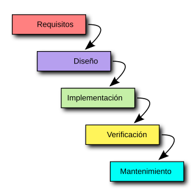
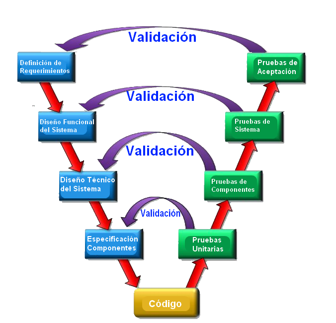
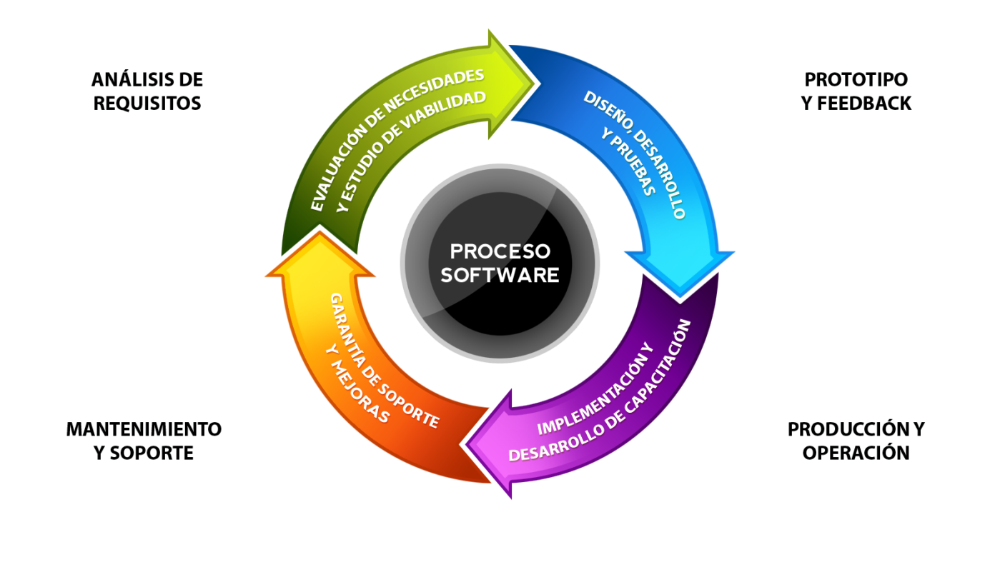

Fundamentos de calidad, procesos de desarrollo tradicionales y metodologías ágiles, con ejemplos prácticos y herramientas interactivas para entender cómo se hace, no solo qué es.
Conceptos clave, métricas, estándares ISO 9126/25000 y técnicas de aseguramiento de calidad.
Ir a la sección →SDLC y modelos tradicionales: cascada, en V, iterativo e incremental, con sus usos y límites.
Ir a la sección →Roles, sprints, ceremonias y tableros explicados en profundidad, comparados con lo tradicional.
Ir a la sección →Glosario buscable, preguntas frecuentes, enlaces de interés y ejercicios prácticos.
Ir a la sección →Quiénes armamos este manual, con qué roles trabajamos y cómo escribirnos con dudas o feedback.
Ir a la sección →¿Ya sabés qué palabra buscás? El glosario tiene filtro en vivo por letra y por texto.
Ir al glosario →Conceptos clave, métricas de referencia, los estándares ISO 9126 y 25000, y las técnicas y herramientas que un equipo usa para asegurar que el software cumpla lo que promete.
Es el grado en que un sistema cumple los requisitos funcionales explícitos, además de expectativas implícitas de uso: que sea confiable, fácil de mantener y agradable de usar.
Norma que definió un modelo de calidad de producto de software organizado en seis características principales.
Sucesora de la ISO 9126: reorganiza el modelo de calidad en dos vistas complementarias y agrega procesos de evaluación.
Comprueban el funcionamiento de componentes individuales del software.
Verifican que los diferentes componentes funcionen correctamente al trabajar juntos.
Evalúan el sistema completo para comprobar que cumpla con los requisitos establecidos.
Se prueba el comportamiento del sistema sin conocer su implementación interna.
Haz clic para ver másTambién llamada prueba funcional. Se analizan las entradas y salidas del sistema sin revisar su código.
Se diseñan pruebas conociendo la estructura interna y el código fuente.
Haz clic para ver másTambién llamada prueba estructural. Se analiza el código y los diferentes caminos que puede recorrer.
Permite registrar, organizar y realizar seguimiento de errores y tareas durante el desarrollo.
Herramienta utilizada para registrar y realizar seguimiento de errores encontrados en el software.
Analiza código JavaScript para detectar errores y problemas relacionados con las buenas prácticas.
Analiza el código fuente para detectar errores, vulnerabilidades y problemas de calidad.
Permite organizar casos de prueba, planificar ejecuciones y realizar seguimiento de resultados.
Facilita la planificación, ejecución y seguimiento de pruebas de software.
El ciclo de vida del desarrollo (SDLC) y los modelos tradicionales que durante décadas definieron cómo un equipo transforma requisitos en software funcionando.
Se relevan las necesidades del cliente y del negocio.
Se define la arquitectura y el comportamiento del sistema.
Se escribe el código que implementa lo diseñado.
Se verifica que el software cumpla lo requerido.
El software pasa a producción y queda disponible.
Se corrigen errores y se agregan mejoras post-lanzamiento.
Cada etapa del SDLC se completa por entero antes de comenzar la siguiente, en una secuencia lineal sin retroceso.

Diagrama del modelo en cascada y sus etapas.
Extiende la cascada asociando cada etapa de desarrollo con una etapa de prueba equivalente, verificando desde el principio.

Diagrama del modelo en V y la relación entre desarrollo y pruebas.
El sistema se construye en ciclos sucesivos, cada uno agregando funcionalidad sobre una versión previa ya funcional.

Diagrama del desarrollo iterativo e incremental.
Esta sección se está redactando. Volvé pronto para ver Scrum, Kanban y XP en profundidad.
El glosario buscable está en construcción. Mientras tanto, explorá las secciones de Calidad y Procesos.
Somos un equipo de estudiantes documentando cómo se construye software de calidad. Escribinos con dudas o feedback.